Armas Chinesas
Armas Romanas
Armas Japonesas
Kurisagama
Neko-te
Kusari-Fundo
Pagina Principal
Formulario
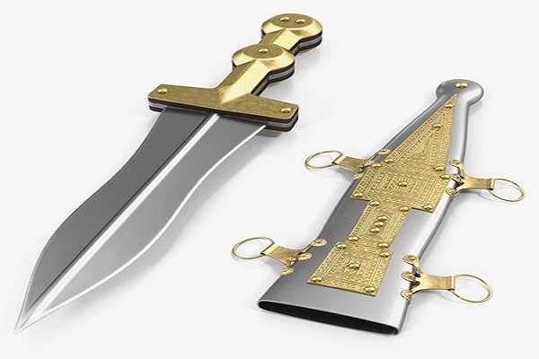
Pugio Romano arma curta usada como apoio
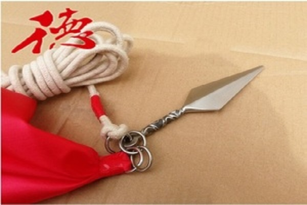
Dardo com corda Chines Usado no kong-Fu
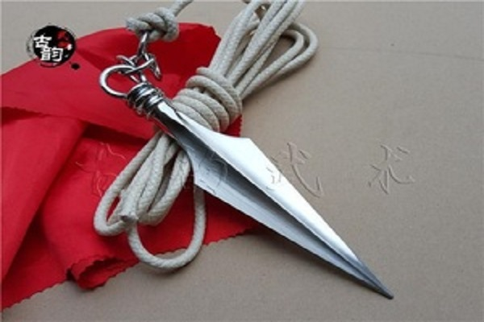
Dardo com corda Chines Usado no kong-Fu
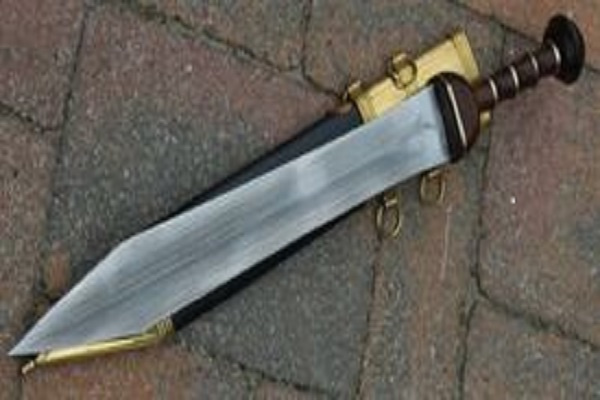
Espada Gladio Romano
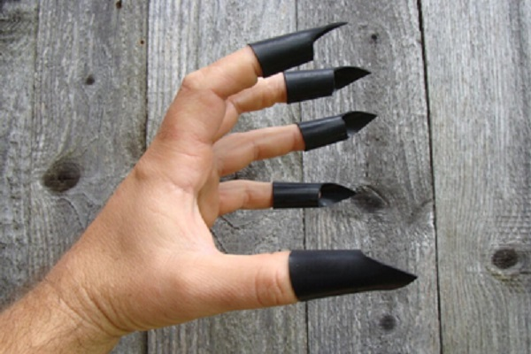
Neko-Te Usado por Kunoichis (Ninjas mulheres)
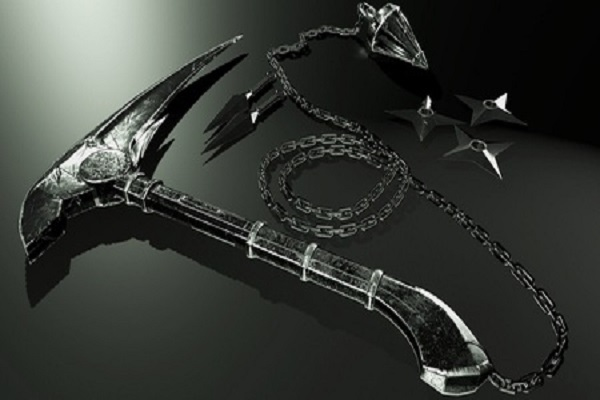
Foice com Corrente Usada por ninjas
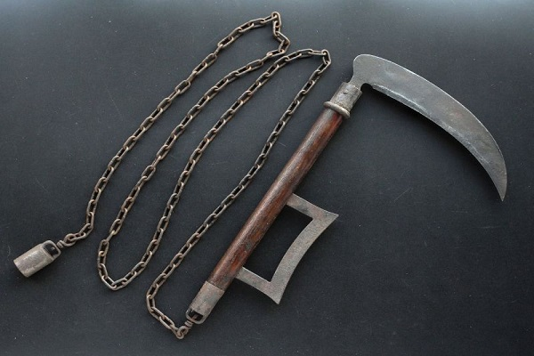
Foice com Corrente Usada por ninjas
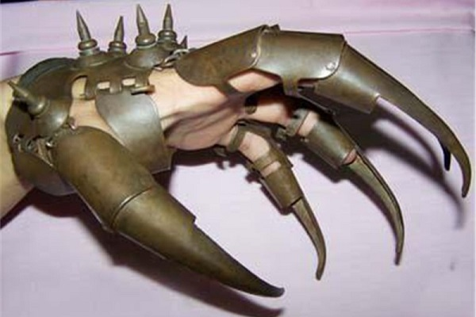
Neko-Te Usado por Kunoichis (Ninjas mulheres)
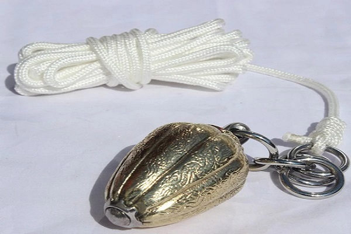
Bola de ferro com corda uso semelhante ao dardo com corda
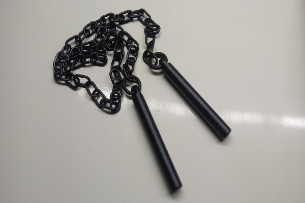
Corrente com pesos usada para imobilização
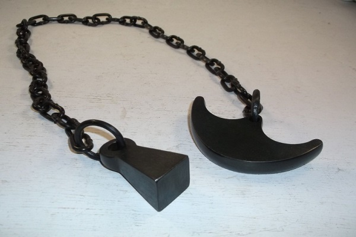
Corrente com pesos usada para imobilização
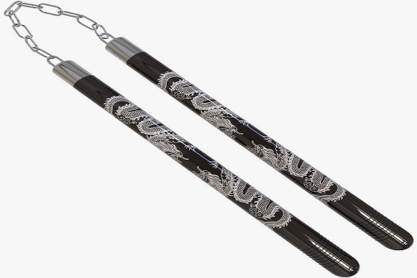
Nuchaku chines usado no kong-Fu